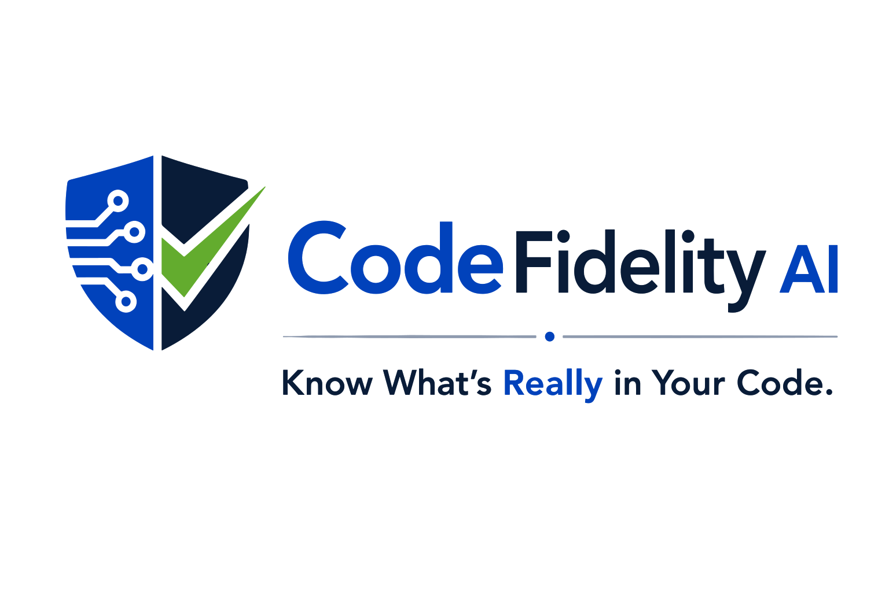

Code Intelligence
Make large codebases easier to understand, navigate, and trust.

CodeFidelity AI helps organizations understand, govern, and trust the software they build — with enterprise code search, release intelligence, and security insight for the age of AI-generated software.
Organizations cannot secure, modernize, or optimize software they do not understand.
Get in touchMake large codebases easier to understand, navigate, and trust.
Support vulnerability analysis, patch verification, and source-of-truth discovery.
Bring clarity and governance to rapidly expanding AI-generated code.
Practical ways CodeFidelity AI can help engineering, security, and leadership teams gain confidence in complex software environments.
Review what AI assistants create before it reaches production, including behavior, risk, ownership, and alignment with engineering standards.
Search across large codebases to locate implementations, APIs, security-sensitive logic, duplicated patterns, and product-specific behavior.
Determine whether vulnerability fixes are present across releases, branches, products, and long-lived software versions.
Identify where open source, vendor, or reused components appear and assess their impact before updates, audits, or disclosures.
Track risky patterns, quality concerns, and maintainability issues as AI-generated code becomes a larger part of the development lifecycle.
Give engineering, security, compliance, and executive teams a trusted view into what is actually inside millions of lines of source code.
Every engineering decision should begin with trustworthy code intelligence. CodeFidelity AI is building that foundation for modern software teams.